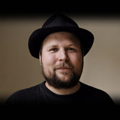

Galería de Actualizaciones - Biografía de Notch - Mobs - Herramientas y usos - Biomas - Dimensiones
Minecraft nació como juego independiente de la mano de Markus Person, un desarrollador sueco más conocido como “Notch”. Todo empezó en 2009, cuando Markus dió a conocer Minecraft a través de vídeos de gameplay en Youtube.
Persson comenzó a programar a los 7 años de edad, usando la Commodore 128 de su padre. Creó su primer juego a la edad de 8 años (una aventura de texto). Despues empezó a trabajar como un desarrollador de juegos para King.com, que dejó después de 4 años para irse a trabajar a Jalbum. Durante ese tiempo fundó el MMORPG Wurm Online, en el que ya no trabaja. Aparte de su trabajo, participa en varias competiciones, incluyendo el "Ludum Dare", "LD12" y el "Concurso de programación de juegos Java 4K".
En 2014, Markus vendería la propiedad de Mojang y de su juego estrella a la compañía de Microsoft, esto posteriormente apartaría a Notch del juego de manera completa, finalmente, por polémicas dadas por los comentarios políticos de Markus en redes sociales, Microsoft se decidiria por censurarle de muchos espacios en el juego.